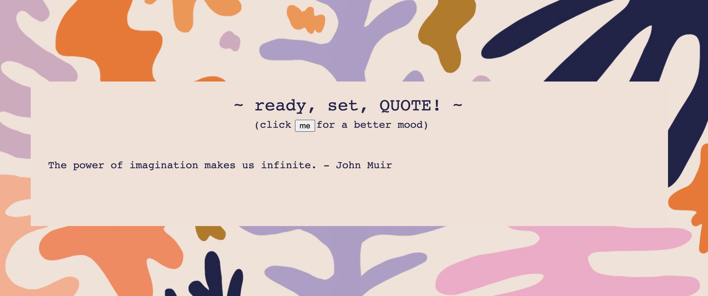
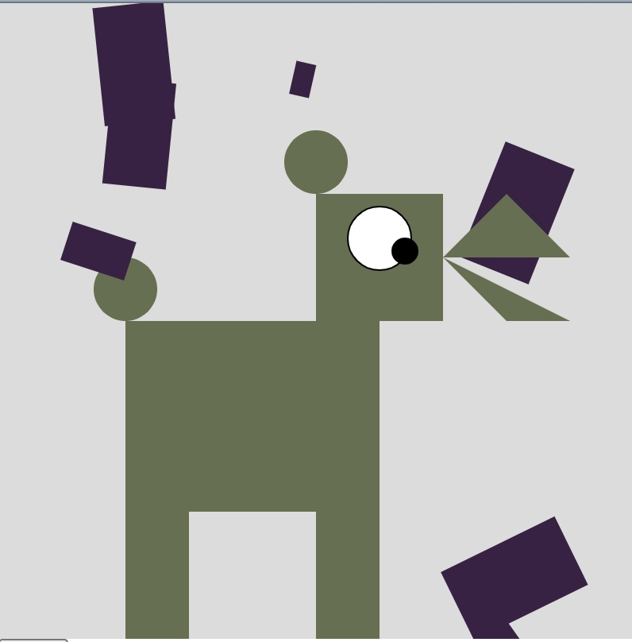

KYRA SYCIP
Net Art
~ p5.js art ~
Happy Thoughts, Happy Quotes
| ART-101 Project - Fall 2020 at San Jose State University - Medium: p5.js, html, css |
This project challenged me to think outside of the box when presented with the prompt of creating a "randomizer" or generator.
During the current social and political climate, I was inspired to create an artwork that lifted people up, rather than tearing
them down. I decided to create a "happy quote" generator that randomly generated different uplifting words from famous authors, artists,
scriptures, and so on. In this artwork I used p5.js to create the randomizer with various coding functions.
Randomizer Project

~
AVATAR: Box Dog
| ART-101 Project - Fall 2020 at San Jose State University - Medium: p5.js, html, css |
Box Dog is a symbolic form of what many would refer to as a "spirit animal." Ever since I was young, dogs have been my
favorite animal. When presented with an "avatar" project, I had to think of how I can incorporate this fondness of dogs into my project.
Taking a more symmetrical approach, this dog turned into a box dog! Using p5.js to add characteristics and functions to the avatar, I was able to bring
my imagination of what a dog within the technological realm would appear to look like. Box Dog can react to audio, and his ears can appear and dissapear with the
movement of the mouse, just as a real dog would when scared or happy. Box Dog also has treats falling behind him, because that is every dog's dream.
Avatar Project
